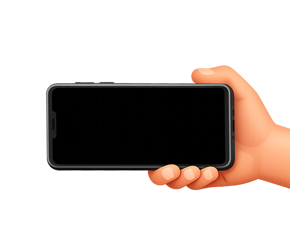

Gouvernance et responsabilité du Board
DORA met la direction et la gouvernance au centre, avec une attente d’implication et de pilotage, pas juste un sujet IT.
Sed non risus. Suspendisse lectus tortor, dignissim sit amet, adipiscing nec, ultricies sed, dolor.


DORA met la direction et la gouvernance au centre, avec une attente d’implication et de pilotage, pas juste un sujet IT.
L’objectif est d’être capable d’encaisser un choc, gérer les incidents, communiquer, tester, et rebondir, pas uniquement documenter.
Diagnostic rapide, cartographie claire, priorisation, plan d’actions, livrables exploitables par Comex/CA.